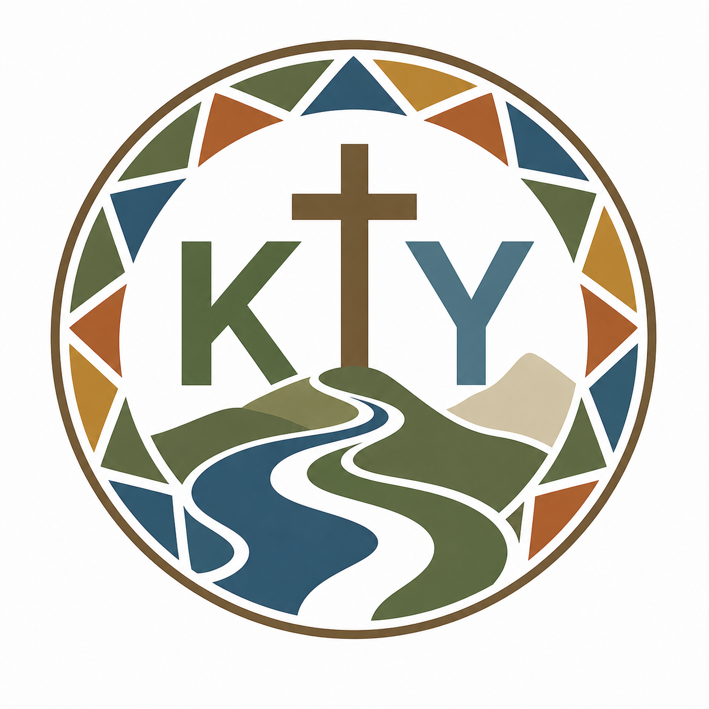
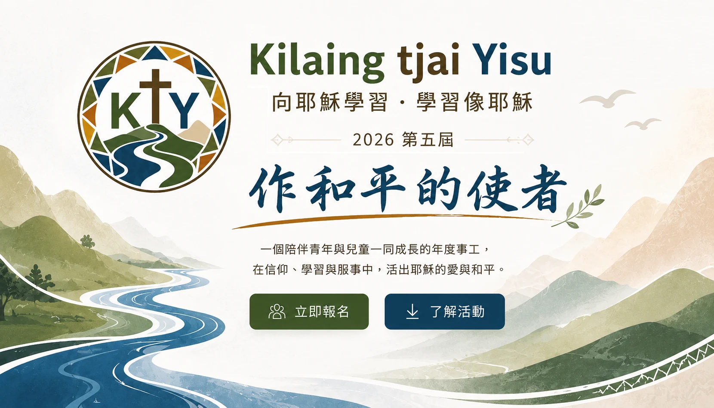

7/12（日）– 7/14（二）
- 地點
- 臺東知本踢踏民宿
- 地址
- 臺東縣臺東市知本路二段292巷139號在 Google Maps 開啟
- 對象
- 15 歲以上青少年及社青
- 截止
- 線上報名至7/6(一)晚上12時止
- 備註
- 完成青年領袖培訓後，將在暑期兒童營擔任營隊同工；報名前請預留兩段活動時間。

Kilaing tjai Yisu 向耶穌學習・學習像耶穌 我要報名
2026 PROGRAMS
兩個營隊，不同年齡層，同一個學習方向，向耶穌學習．學習像耶穌。
2026 CHILDREN'S CAMP SCHEDULE
透過敬拜、故事、分班與團隊活動，陪伴孩子學習成為和平的小使者。
耶穌小幫手，明年見！實際流程依現場安排為準。
學習的旅程
透過學習、體驗與實踐，成為信仰與生命的領袖
2026 CAMP SCHEDULE
從相遇、學習到差遣，讓每一天都成為向耶穌學習、學習像耶穌的旅程。
裝備自己，也陪伴下一個世代。
7/12（日）－7/14（二）
認識耶穌，也學習彼此相愛。
7/27（一）－7/29（三）
REGISTRATION COMPLETE
主辦單位將依填寫資料與你聯繫。